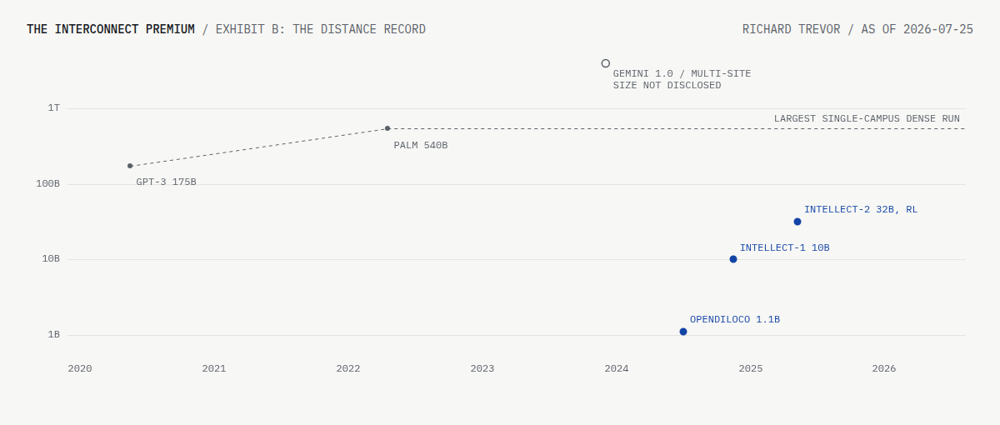

A large share of AI hardware value rests on one assumption: frontier training stays inside a single building. The assumption is a bandwidth requirement. Exhibit A computes it for the unsharded data-parallel case, and a known family of methods attacks it at published exchange rates. This page prices the assumption through a marketplace proxy and states, in advance, what would falsify it. The write-up carries the full argument.
The Bandwidth Wall
Each line is the bandwidth one worker needs to hold a 5 second step as model size grows. Where a line leaves a band, that method has outgrown that class of link.

Where can this run
The Premium, Collecting
Rental marketplaces price the same accelerator differently depending on the machine around it. The collector compares single-GPU asks with whole 8+ GPU NVLink nodes, holding the accelerator fixed; the spread is a daily proxy for what the fabric adds, and it carries host, region and bundle effects a proxy cannot remove. The first pull found the whole-node side too thin to publish, so the collector runs daily until both sides clear the stated minimums.
The Distance Record
The largest documented multi-site training runs, against the largest disclosed dense run on private fabric.

The Scenario Table
Demand exposure under each state of the premium. Directions, not names.
| Exposure | Reading | Why |
|---|
What Would Kill This
- 1Premium series below 5 points for two consecutive quarters, absent a supply explanation.COLLECTING
- 2A documented run at 100B+ parameters over links of 10 Gb/s or less, within 1.3x matched co-located compute.WATCHING
- 3Documented communication reduction reaches 5000x at 10B+ scale.WATCHING
Any trigger produces a written update to this page. This is the monitor I would run.